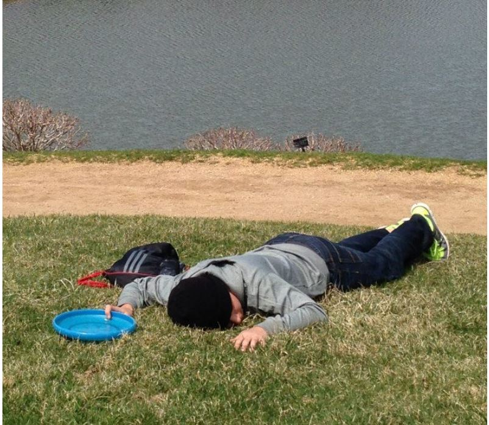

HOMETOWN: SUDBURY, MA
NICKNAME: RONNY -> RON -> RONALDO -> RONALD -> NALD
PAST TEAMS: SUDBURY HIGH ULTIMATE, TACO WAGON

On the morning of August 11th, 1998, Old MacDonald awoke to the shrill cries of a baby. He made his way to the barn and discovered the source of the noise: a runt-like infant swaddled in ice packs clutching a misprint with the name Aaron Epstein sharpied on it.
Old MacDonald took the baby in and raised him as if he were his own son. Over the years Aaron learned all of the important parts of being a farmer, and by age 10 he had mastered the art of getting up and completing all of his work for the day before anyone else was even awake. However, despite his natural talents, Aaron was not happy. The life of a farmer lacked the excessive quantities of coding and Fifa that Aaron had always dreamed of. And so, when he turned 18, with no destination in mind Aaron packed up his ice bags and left the farm town of Sudbury behind.
After walking for a few miles, Aaron spotted a starving old man on the side of the road. He approached him and, not knowing what else to do, offered the man a passback. Overwhelmed by this stranger’s generosity, the old man bestowed his knees upon Aaron and advised him to follow the road until he reached Tufts.
Upon his arrival at the beautiful Somerville/Medford campus, Aaron immediately impressed the team with his dabbing abilities and lack of turns. In the few short hours everyday that his sleep cycle overlaps with the rest of humanity’s, Aaron enjoys losing burritos in Fifa, missing the best frisbee parties, and fantasizing about the day when he throws a dime-ball hammer and it isn’t dropped.